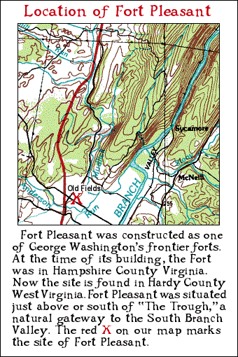

This Indenture made the sixteenth
day of November in the year of our Lord one thousand
seven hundred and eighty seven between Christiana Neff,
widow and relict of Henry Neff late of the County of
Hampshire now
deceased and Adam Neff, eldest son of the said Henry Neff,
Thomas Barton Smoot and Catherine his wife, late Catherine Neff and
Esther Neff daughters of the said Henry Neff of the one part
and Sylvester Welch of the said county of the other part. Whereas the said
Henry Neff in his lifetime being seized in fee simple and
possessed of a certain tract of land on the southwest side of Patterson’s Creek
and run called Ramsey’s Run, a drain of the said creek
adjoining the Manor of the said County of Hampshire bounded as follows, to wit:
Beginning at a white oak standing on a hillside, corner to Peter Beaver,
then with his line South 23° 15
me West
thirty four poles to a stake on the brow of a hill by a hickory near the
said Beaver’s fence, thence extending from his line N 66°
45
me W fifty poles to a black
oak on a level, thence S 23° 15
me W
fifty poles to a white oak and hickory standing on the east side of
the wagon road from Fort Pleasant,
† then S 66°
45
me E fifty poles to the line of the said Beaver by a
large white oak on a descent near his fence,
then with his line S 23° 15
me W at
about 116 poles, crossed the road from Fort Pleasant
one hundred and eighty eight poles to a white oak on a hillside his corner,
then with another of his lines South 14° W 126 poles
to two small white oaks, his corner and William Buffington’s, then with
Buffington’s line S 25° W seven poles to a large white
oak and two small ones in the head of a hollow corner to M
r
Rilfe’s land, then with his
line N 47° W eighty poles crossed Ramsey0146;s Run the same course continued
one hundred and twenty four poles to his corner, a white
oak and hickory on a hill, then with another of his lines, N 30° W two
hundred and ten poles to his corner in said Manor line, then binding
along the said line N 32° E one hundred and twenty one poles crossing
Ramsey’s Run to two white oaks, a hickory and a
small red oak in the said line standing on the east side of a hollow, then
extending from the said Manor East at 72 poles crossed the
Pensferry Branch
at 211 poles, crossed the wagon road from Fort Pleasant the same course
continued in all two hundred and seventy poles to the beginning, containing
four hundred and twenty nine and one half acres which was granted to Andrew
Ramsey by deed from the Proprietor of the Northern Neck of Virginia
bearing date the third day of September 1767, and by the said Andrew Ramsey
conveyed to the said Henry Neff the
18
th day of October 1773 by deeds
of lease and release and being so thereof seized and possessed he the said
Henry Neff in his lifetime contracted with the said Sylvester Welch for the sale
thereof to him and his heirs for the consideration of one hundred and fifty
two pounds eight shillings current money of Virginia and passed a bond
accordingly. Now This Indenture, witnesseth that for and in consideration of
the sum of ninety seven pounds part of the consideration aforesaid paid to the
said Henry Neff in his lifetime and the residue amounting to fifty two pounds
eight shillings to the said Christiana Neff and Adam Neff, administrators of all
the goods and chattels, rights, and credits of the said Henry Neff in hand paid
by the said Sylvester Welch at and before the sealing and delivery of these
presents, and also the further sum of twenty shillings current money to the said
Christiana Neff, Adam Neff, Thomas Barton Smoot and Catherine his wife
and Esther Neff also in hand paid the receipt whereof is also hereby acknowledged,
they the said Christiana Neff, Adam Neff, Thomas Barton Smoot and
Catherine his wife and Esther Neff have granted, bargained, sold, aliened and
confirmed and by these presents do grant, bargain, sell, alien and confirm
unto the said Sylvester Welch as well as the dower of the said Christiana Neff
as several parts and proportions of the said Adam Neff, Thomas Barton
Smoot and Catherine his wife and Esther Neff of the said tract of land with
the appurtenances thereunto belonging, which legally descend to them
respectively by the death of the said Henry Neff, intestate, and the reversion
and reversions, remainder and remainders, rents, issues and profits thereof
and also all the estate, right, title, interest, property, claim and demand
whatsoever either in law or equity of them the said Christiana Neff, Adam Neff,
Thomas Barton Smoot and Catherine his wife and Esther Neff of, in and to the
said tract of land and appurtenances. To Have and to Hold the land
hereby conveyed and all and singular the premises hereby granted with their
appurtenances unto the said Sylvester Welch, his heirs and assigns forever to
the only proper use and behoof of him the said Sylvester Welch and his heirs
and assigns forever. In witness whereof the said Christiana Neff, Adam
Neff, Thomas Barton Smoot and Catherine his wife and Esther Neff have hereunto
set their hands and seals the day and year first above mentioned.
Sealed and delivered in the presence of
Samuel Davis
Isaac Miller
Job Parker
Isaac Welch
|
her
Christiana X Neff
Mark
Adam Neff
Thomas Smoot
her
Catherine X Smoot
Mark
Ester XX Neff
|
At a Court held for Hampshire County April 10
th 1788
This Deed of Bargain and Sale from Christiana Neff, Adam Neff,
Thomas Barton Smoot and Catherine his wife and Esther Neff to Sylvester Welch was proved by the oaths of Samuel
Davis, Isaac Miller, Job Parker and Isaac Welch, the subscribing witnesses thereto, and ordered to be recorded.
Test. And Wodrow C.C.
Notes
Fort Pleasant was built in 1756 on the order of Colonel George Washington. It was one several forts built to protect
settlers on the western frontier. By the time of this deed, it may not have been an active fort. (DMS)
